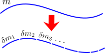
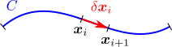
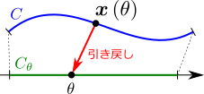
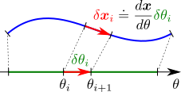
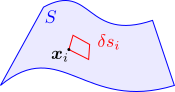
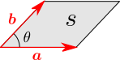
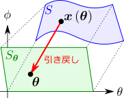
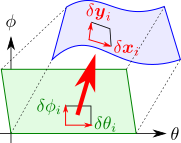
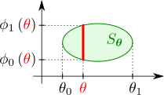

密度分布
𝜌(𝑥)
が分かっている曲線・曲面・立体の全質量を求めたい。
全体の質量＝微小要素の質量の和
3次元空間中に曲線（の形をしたひもや針金）がおかれているとする。この曲線の全質量を求める方法を考えてみる。もしも曲線の線密度が一定であればこれは簡単で、全質量
𝑚
は、線密度
𝜌
に「曲線の長さ
𝑙
」を掛けたものになる：
𝑚=𝜌𝑙(1)
𝑚
は
𝑙
に比例することは直感的に明らかだろう。
𝜌
はその係数として定義されるものであり、予め分かっているとする。

線密度
𝜌
が場所によって異なる場合であっても、右図のように、曲線を多数の微小な線要素に仮想的に分割すればよい。全質量
𝑚
は、それぞれの線要素の質量
𝛿𝑚𝑖
を足し合わせたものである（＝区分求積法）：
𝑚=∑𝑖𝛿𝑚𝑖
線要素を十分小さくとっておけば、各々の線要素内では密度が一定になっていると見なせるので、
𝛿𝑚𝑖
は、式(1)と同様に「線要素の密度
𝜌𝑖
」と「線要素の長さ
𝛿𝑙𝑖
」の積で近似できる：
𝛿𝑚𝑖≐𝜌𝑖𝛿𝑙𝑖
両式を合わせることにより、
𝑚
は
𝑚≃∑𝑖𝜌𝑖𝛿𝑙𝑖
と近似できる。
等式にするには、分割を非常に細かくしていった極限（
𝛿→0
と書くことにする）を取ればよい：
𝑚=lim𝛿→0∑𝑖𝜌𝑖𝛿𝑙𝑖(2)
これは、区分求積法の形をしているので、通常の積分
∫𝑏𝑎𝑓(𝑥)𝑑𝑥
の形に帰着させる公式が存在しそうである。
この章では、そのような積分公式を求める。線密度・面密度・体積密度の場合それぞれについて、以下の3つの節に分けて議論を行う：14.1線密度の積分14.2面密度の積分14.3体積密度の積分
なお、見やすくするため、通常の積分表記
∫𝑏𝑎𝑓(𝑥)𝑑𝑥
の代わりに、
𝑑𝑥
を省略した以下の表記を使う（標準的ではない）：
∫𝑏𝑥=𝑎𝑓(𝑥)≡∫𝑏𝑎𝑓(𝑥)𝑑𝑥
14.1線密度の積分
この節では、曲線の形状を適当なパラメータ
𝜃
で表すことにより、曲線上での積分を、通常の積分
∫𝑏𝜃=𝑎𝑓(𝜃)
に帰着させる公式(9)を導く。
14.1.1全質量を微小線要素の和で表す：式(3)

質量を求めたい曲線を
𝐶
とおく。冒頭で述べたように、
𝐶
を微小な線要素に分割する。右図のように、
𝑖
番目の線要素の始点を
𝒙𝑖
とし、線要素の始点と終点を結ぶベクトルを
𝛿𝒙𝑖
とおく。1つの線要素の質量は
𝛿𝑚𝑖≐𝜌(𝒙𝑖)|𝛿𝒙𝑖|
なので、全質量
𝑚
は、式(2)と同様に定式化できる：
𝑚=lim𝛿→0∑𝑖𝛿𝑚𝑖=lim𝛿→0∑𝑖𝜌(𝒙𝑖)|𝛿𝒙𝑖|≡∫𝐶𝜌(𝒙)|𝑑𝒙|(3)(4)
式(3)の
lim𝛿→0∑𝑖
を形式的に
∫𝐶
に置き換えた形になっているのは、通常の区分求積法と同様である。
∫𝐶
は曲線
𝐶
上で積分を行うことを表す。通常の積分と違って絶対値
|𝑑𝒙|
をかけており、積分の方向が意味を持たないので、この表記で十分である。
ただし、以降では、さらに積分表記を簡略化して、
|𝑑𝒙|
を省略したものを使う（一般的ではない）：
𝑚=∫𝒙∈𝐶𝜌(𝒙)(5)
𝒙∈𝐶
は、
𝒙
が
𝐶
上の点をとることを表す。式(5)を見たら、頭の中で式(3)（＝
𝐶
を細かい線要素に分割して「線要素の長さと
𝜌
をかけたもの」の総和をとる）をイメージする。
14.1.2積分(5)を数直線上の積分に引き戻す：式(9)
式(5)の値は、曲線の形状
𝐶
と密度
𝜌
を与えることで決まる。問題は、これをどう計算するかである。冒頭でも述べたように、曲線
𝐶
は1次元なので、3次元空間内の積分(5)を、1次元の数直線
𝜃
上の積分
∫𝑏𝜃=𝑎𝑓(𝜃)
の形に変換したい。この変換のことを、積分を（3次元空間から数直線上に）「引き戻す（pullback）」という。引き戻しを行うには、式(3)の各項を
𝜃
で表せばよい。

まず、右図のように針金の曲線
𝐶
に適当なパラメータ
𝜃
を入れ、
𝜃
が取り得る範囲を
𝐶𝜃
とおく。
𝜃
を与えれば、対応する
𝒙(𝜃)
が決まる。これにより、密度分布
𝜌(𝒙)
も、
𝐶𝜃
上に引き戻される（＝
𝜃
の関数として表される）：
𝜌(𝒙(𝜃))
。

ここで、
𝐶𝜃
の分割を決めれば、曲線
𝐶
の分割も決まることに着目する。実際、右図のように、
𝐶𝜃
を微小な線要素
𝛿𝜃𝑖
に分割してやれば、
𝛿𝒙𝑖
は、微分の連鎖律から決まる：
𝛿𝒙𝑖≐𝑑𝒙𝑑𝜃𝛿𝜃𝑖(6)
このことを、
𝐶𝜃
の分割を
𝐶
に「押し出す（pushforward）」という。これにより、式(3)の
|𝛿𝒙𝑖|
を、
𝛿𝜃𝑖
で表すことができる：
|𝛿𝒙𝑖|=√𝛿𝒙T𝑖𝛿𝒙𝑖≐√(𝑑𝒙𝑑𝜃𝛿𝜃𝑖)T(𝑑𝒙𝑑𝜃𝛿𝜃𝑖)=(𝑑𝒙𝑑𝜃)T⏟≡𝑔√(𝑑𝒙𝑑𝜃)T(𝑑𝒙𝑑𝜃)T𝑑𝒙𝑑𝜃⏟__⏟__⏟≡𝑔(𝛿𝜃𝑖)2=√𝑔𝛿𝜃𝑖(7)
𝛿𝜃𝑖
部分は本来、絶対値を付けて
|𝛿𝜃𝑖|
とすべきだが、
0<𝛿𝜃𝑖
となるように分割することにして絶対値を外した。
𝑔
は計量と呼ばれる。計量という名前は、式(7)のように、
𝛿𝜃
から、
𝛿𝒙
の大きさ
|𝛿𝒙|
を「計量」するために必要な量であることに由来する。
後は、式(7)を式(3)に代入すれば、
𝐶𝜃
での積分になる。即ち、
𝐶𝜃
の範囲を
[𝜃0,𝜃1]
として以下のようになる：
𝑚=lim𝛿→0∑𝑖𝜌(𝒙(𝜃𝑖))√𝑔𝛿𝜃𝑖=∫𝜃1𝜃=𝜃0𝜌√𝑔(8)
得られた結果をまとめると、以下の【14.1-注1】のようになる。
【14.1-注1】線積分の引き戻し公式：式(9)
曲線
𝐶
上で与えられた線密度
𝜌(𝒙)
を、
𝐶
上で積分したもの
𝑚
は
𝑚=∫𝒙∈𝐶𝜌
で与えられる。この積分を数直線上の区間
𝐶𝜃=[𝜃0,𝜃1]
に引き戻す公式は、以下のようになる：（
𝜌=𝜌(𝒙(𝜃))
）
𝑚=∫𝜃1𝜃=𝜃0𝜌√𝑔𝑔(𝜃)≡∣𝑑𝒙𝑑𝜃∣2(9)(10)
あえてルート記号を残しているのは、後述の面積分(19)や体積積分(29)と合わせるためである。
14.1.3【例題】円の場合：式(11)
例題として、半径
𝑅
の円形の針金の質量
𝑚
を考える。線密度
𝜌
は定数とする。答えはもちろん
𝑚=2𝜋𝑅⋅𝜌
（＝円周の長さ
2𝜋𝑅
に線密度
𝜌
をかけたもの）であるが、式(9)を用いて計算する。
2次元の極座標
𝒙(𝜃)=[𝑅cos𝜃𝑅sin𝜃]
を使って引き戻すのが自然である。式(10)より、
√𝑔
は
√𝑔=∣𝑑𝒙𝑑𝜃∣=𝑅∵𝑑𝒙𝑑𝜃=[−𝑅sin𝜃𝑅cos𝜃]
よって質量
𝑚
は、式(9)により、積分範囲が
[𝜃0,𝜃1]=[0,2𝜋]
であることに注意して
𝑚=∫2𝜋𝜃=0⏟2𝜋𝜌𝑅=2𝜋𝜌𝑅◼(11)
14.2面密度の積分
この節では、曲面の形状をパラメータ表示することで、曲面上での積分を通常の多重積分に帰着させる公式(19)を導く。
14.2.1全質量を微小面要素の和で表す：式(12)

曲面（
𝑆
とおく）の質量を計算したい。そのために、前節と同様に、
𝑆
を微小な面要素に分割する。右図のように、
𝑖
番目の微小要素上の1点を
𝒙𝑖
とし、要素の面積を
𝛿𝑠𝑖
とおく。
𝑆
の全質量
𝑚
は、面要素の質量
𝛿𝑚𝑖≐𝜌(𝒙𝑖)𝛿𝑠𝑖
の和をとれば良いので、式(4)と同様に、以下のように書ける：
𝑚=lim𝛿→0∑𝑖𝛿𝑚𝑖=lim𝛿→0∑𝑖𝜌(𝒙𝑖)𝛿𝑠𝑖≡∫𝑆𝜌(𝒙)∣𝑑2𝒙∣(12)(13)
∫𝑆
は曲面
𝑆
上の積分であることを表す。
前節の線積分の場合と揃えるために、微小な面積を
∣𝑑2𝒙∣
という記号で表している。これは、2次元平面上の2つのベクトル
𝛿𝒙,𝛿𝒚
が作る平行四辺形の面積
𝛿𝑠
が、
𝛿𝑠=±|𝛿𝒙𝛿𝒚|
（
|⋯|
は行列式であり、符号は全体が正になるように選ぶ）と書けることを考えると自然だろう。なお、3次元空間でも成り立つ面積の公式は、以下の【14.2-注1】のようになる。
前節と同様に、以降では、式(13)を以下のように略記する（一般的な記法ではない）：
∫𝒙∈𝑆𝜌(𝒙)(14)
【14.2-注1】3次元空間での面積の公式
2つの3次元ベクトル
𝒂,𝒃
が作る平行四辺形の面積
𝑠
は、以下のようになる：
𝑠=√det([𝒂𝒃]T[𝒂𝒃])(15)
det(⋯)
は行列式である（
|⋯|
と書くと見づらいため）。
導出

導出は、内積の公式
𝒂T𝒃=|𝒂||𝒃|cos𝜃
を使うだけである。
𝜃
は
𝒂,𝒃
のなす角（右図）。実際、式(15)の右辺の2乗を計算していけば、左辺の2乗に一致する：
(右辺)2=det([𝒂T𝒃T][𝒂𝒃])=det[𝒂T𝒂𝒂T𝒃𝒃T𝒂𝒃T𝒃]=|𝒂|2|𝒃|2−(𝒂T𝒃)2=|𝒂|2|𝒃|2sin2𝜃=𝑠2◼
14.2.2式(12)を2次元平面上の積分に引き戻す：式(19)

曲面自体は2次元なので、積分(14)を2次元平面上の積分に引き戻すことを考える（右図）。まずは、曲面
𝑆
上に、適当なパラメータ
𝜽=(𝜃,𝜙)
を入れてやればよい：
𝒙=𝒙(𝜽)
。
𝜽
の取る平面領域を
𝑆𝜽
とおく。密度関数も、
𝜽
の関数に引き戻される：
𝜌(𝒙(𝜽))
。

次に、前節の1次元の場合と同様に、
𝑆𝜽
を微小面要素に分割する。
𝑆𝜽
での分割を
𝑆
に押し出すことにより、
𝑆
の分割も決まる。実際、微小面要素を「
𝜃,𝜙
軸に沿った長方形」とすれば（右図緑色部分）、
𝛿𝜃𝑖,𝛿𝜙𝑖
を元の曲面
𝑆
に押し出したベクトル、それぞれ
𝛿𝒙𝑖,𝛿𝒚𝑖
は
𝛿𝒙𝑖≐𝜕𝒙𝜕𝜃𝛿𝜃𝑖𝛿𝒚𝑖≐𝜕𝒙𝜕𝜙𝛿𝜙𝑖⎫{
{
{⎬{
{
{⎭(16)
となる（式(6)と同様）。
後は、式(12)の面積
𝛿𝑠𝑖
を、
𝛿𝜃𝑖,𝛿𝜙𝑖
を用いて表せばよい。式(16)を面積公式(15)に代入するだけである：
𝛿𝑠𝑖=√det([右と同じ]T[𝛿𝒙𝑖𝛿𝒚𝑖])≐√det([⋯]T[𝜕𝒙𝜕𝜃𝛿𝜃𝑖𝜕𝒙𝜕𝜙𝛿𝜙𝑖])∣
∣
∣
∣定義：𝑑𝒙𝑑𝜽≡[𝜕𝒙𝜕𝜃𝜕𝒙𝜕𝜙]=√det([⋯]T𝑑𝒙𝑑𝜽[𝛿𝜃𝑖00𝛿𝜙𝑖])∣行列式の公式：|𝐴𝐵⋯|=|𝐴||𝐵|⋯=∣(𝑑𝒙𝑑𝜽)T∣⏟≡𝑔√∣∣(𝑑𝒙𝑑𝜽)T∣(𝑑𝒙𝑑𝜽)T𝑑𝒙𝑑𝜽⏟__⏟__⏟≡𝑔∣∣𝛿𝜃𝑖00𝛿𝜙𝑖∣2=√|𝑔|𝛿𝜃𝑖𝛿𝜙𝑖(17)
なお、
𝛿𝜃𝑖,𝛿𝜙𝑖
には、本来、絶対値が必要だが、前節と同様に
0<𝛿𝜃𝑖,𝛿𝜙𝑖
と取ることにして絶対値を外した。この
𝑔
も計量と呼ばれる。
𝑆𝜽
上での微小ベクトル
𝛿𝜽
を
𝑆
に押し出したベクトル
𝛿𝒙
の大きさは、
𝑔
により、
|𝛿𝒙|≐√𝛿𝒙T𝛿𝒙≐√𝛿𝜽T𝑔𝛿𝜽
と書ける。
式(17)を区分求積の式(12)に代入すると、全質量
𝑚
が、2次元平面
𝑆𝜽
上の積分で表される：
𝑚=lim𝛿→0∑𝑖𝜌(𝒙𝑖)𝛿𝑠𝑖=lim𝛿→0∑𝑖𝜌(𝒙(𝜽𝑖))√|𝑔|𝛿𝜃𝑖𝛿𝜙𝑖≡∫𝑆𝜽𝜌√|𝑔|𝑑𝜃𝑑𝜙(18)
𝑆𝜽
上での積分(18)を計算するには、
𝜃
積分と
𝜙
積分を順に行えばよい（累次積分）：
𝑚=∫𝜃1𝜃=𝜃0∫𝜙1(𝜃)𝜙=𝜙0(𝜃)𝜌√|𝑔|
詳細は以下の【14.2-注2】を参照のこと。
【14.2-注2】面積分の引き戻し公式：式(19)
曲面
𝑆
上で与えられた線密度
𝜌(𝒙)
を、
𝑆
上で積分したもの
𝑚
：
𝑚=∫𝒙∈𝑆𝜌
を計算したい。この積分を、
𝜽=(𝜃,𝜙)
を軸とする2次元平面上の領域
𝑆𝜽
上の積分に引き戻す公式は、以下のようになる：（
𝜌=𝜌(𝒙(𝜽))
）
𝑚=∫𝜃1𝜃=𝜃0∫𝜙1(𝜃)𝜙=𝜙0(𝜃)𝜌√|𝑔|𝑔(𝜃)≡(𝑑𝒙𝑑𝜽)T𝑑𝒙𝑑𝜽(19)(20)
まず
𝜙
積分を行って、次に
𝜃
積分を行えばよい。

ただし、
𝜃
積分の範囲
𝜃0,𝜃1
は、
𝑆𝜽
における
𝜃
の最小値・最大値である（右図）。
𝜙
積分の範囲
𝜙0(𝜃),𝜙1(𝜃)
は、
𝜃
を固定したときの
𝜙
の最小値・最大値である（同図）。式(19)の積分順序を変えて
𝜃
積分を先に行ってもよい：
𝑚=∫𝜙1𝜙=𝜙0∫𝜃1(𝜙)𝜃=𝜃0(𝜙)𝜌√|𝑔|
その場合、
𝑆𝜽
を横に刻む形になる：
14.2.3【例題】球面の場合：式(21)
半径
𝑅
の球面の質量
𝑚
を考える。面密度
𝜌
は定数とする。答えはもちろん、
𝑚=4𝜋𝑅2⋅𝜌
である。
極座標
𝜽=(𝜃,𝜙)
：
𝒙(𝜽)=⎡⎢
⎢
⎢⎣𝑅sin𝜃cos𝜙𝑅sin𝜃sin𝜙𝑅cos𝜃⎤⎥
⎥
⎥⎦
を用いて引き戻すことを考える。まず、
√|𝑔|
は、計量
𝑔
の定義(20)により、以下のようになる：
𝑔=(𝑑𝒙𝑑𝜽)T𝑑𝒙𝑑𝜽∣
∣
∣
∣
∣𝑑𝒙𝑑𝜽=[𝜕𝒙𝜕𝜃𝜕𝒙𝜕𝜙]=𝑅⎡⎢
⎢⎣cos𝜃cos𝜙−sin𝜃sin𝜙cos𝜃sin𝜙sin𝜃cos𝜙−sin𝜃0⎤⎥
⎥⎦=[𝑅200𝑅2sin2𝜃]∴√|𝑔|=𝑅2sin𝜃
𝑔
が上手く対角化されているのは、
𝜃
軸と
𝜙
軸が直交するためである。よって、式(19)から質量
𝑚
が求まる。実際、
𝑆𝜽
が、
0<𝜃<𝜋
と
0<𝜙<2𝜋
で定義される直方体であることに注意して
𝑚=∫𝜋𝜃=0∫2𝜋𝜙=0𝜌⋅𝑅2sin𝜃=∫𝜋𝜃=0sin𝜃⏟2⋅∫2𝜋𝜙=01⏟2𝜋⋅𝜌𝑅2=4𝜋𝑅2𝜌◼(21)
14.3体積密度の積分
立体の場合、すでに通常の多重積分の形になっているので、引き戻しは、単なる変数変換となる。この節では、その変数変換の公式(29)を導く。
14.3.1全質量を微小体積要素の和で表す：式(22)
立体
𝑉
の質量を求めたい。これまでと同様に、
𝑉
を微小な体積要素に分割する。
𝑖
番目の要素上の1点を
𝒙𝑖
、体積を
𝛿𝑣𝑖
とおくと、
𝑉
の全質量
𝑚
は
𝑚=lim𝛿→0∑𝑖𝜌(𝒙𝑖)𝛿𝑣𝑖=∫𝑉𝜌(𝒙)∣𝑑3𝒙∣(22)(23)
となる。前節同様、式(22)は、以下のようにも表記する：
∫𝒙∈𝑉𝜌(𝒙)(24)
3つのベクトル
𝛿𝒙,𝛿𝒚,𝛿𝒛
が作る平行六面体の体積
𝛿𝑣
は、平行四辺形の面積に場合(15)と同様に
𝛿𝑣=√det([𝛿𝒙𝛿𝒚𝛿𝒛]T[𝛿𝒙𝛿𝒚𝛿𝒛])(25)
となる。あるいは、公式
|𝐴𝐵|=|𝐴||𝐵|
が使えるので、以下のようにも書ける：（符号は全体が正になるようにとる）
𝛿𝑣=±|𝛿𝒙𝛿𝒚𝛿𝒛|
14.3.2そのまま計算する場合は式(26)、変数変換を行う場合は式(28)
3次元の場合は、引き戻し（変数変換）を行わなくても計算できる。実際、体積要素が「
𝑥,𝑦,𝑧
軸に沿った直方体」になるように分割を行えば、その体積
𝛿𝑣𝑖
は、直方体の各辺の長さを
𝛿𝑥𝑖,𝛿𝑦𝑖,𝛿𝑧𝑖
として、
𝛿𝑣𝑖=𝛿𝑥𝑖𝛿𝑦𝑖𝛿𝑧𝑖
となるので、式(23)は以下のようになる：
𝑚=∫𝑉𝜌(𝒙)𝑑𝑥𝑑𝑦𝑑𝑧=∫𝑥1𝑥=𝑥0∫𝑦1(𝑥)𝑦=𝑦0(𝑥)∫𝑧1(𝑥,𝑦)𝑧=𝑧0(𝑥,𝑦)𝜌(𝒙)(26)
前節の式(19)と同様に、各変数について順に積分すれば計算できる。
とはいえ、変数変換を考えたほうがよい場合もある。例えば、球対称な物体の場合は、極座標を用いた方が計算しやすいだろう。変数変換を行うために、立体
𝑉
上に適当なパラメータ
𝜽=(𝑟,𝜃,𝜙)
を入れる：
𝒙=𝒙(𝜽)
。
𝜽
の取り得る領域を
𝑉𝜽
とする。
𝑉𝜽
上の微小体要素として、
𝑟,𝜃,𝜙
軸に沿った直方体
𝛿𝑟𝛿𝜃𝛿𝜙
を考え、「この直方体を
𝑉
に押し出したもの」の体積
𝛿𝑣𝑖
は、式(25)を用いて以下のようになる：
𝛿𝑣𝑖=√det([右と同じ]T[𝛿𝒙𝛿𝒚𝛿𝒛])≐√det([⋯]T[𝜕𝒙𝜕𝑟𝛿𝑟𝑖𝜕𝒙𝜕𝜃𝛿𝜃𝑖𝜕𝒙𝜕𝜙𝛿𝜙𝑖])∣
∣
∣
∣定義：𝑑𝒙𝑑𝜽≡[𝜕𝒙𝜕𝑟𝜕𝒙𝜕𝜃𝜕𝒙𝜕𝜙]=√√
√
√
√
√⎷det⎛⎜
⎜
⎜⎝[⋯]T𝑑𝒙𝑑𝜽⎡⎢
⎢⎣𝛿𝑟𝑖𝛿𝜃𝑖𝛿𝜙𝑖⎤⎥
⎥⎦⎞⎟
⎟
⎟⎠=∣
∣
∣
∣(𝑑𝒙𝑑𝜽)T⏟≡𝑔∣
∣
∣
∣√√
√
√
√
√⎷∣(𝑑𝒙𝑑𝜽)T(𝑑𝒙𝑑𝜽)T𝑑𝒙𝑑𝜽⏟__⏟__⏟≡𝑔∣∣𝛿𝑟𝑖𝛿𝜃𝑖𝛿𝜙𝑖∣2=√|𝑔|𝛿𝑟𝑖𝛿𝜃𝑖𝛿𝜙𝑖(27)
𝛿𝑟𝑖𝛿𝜃𝑖𝛿𝜙𝑖
には、本来、絶対値が必要だが、これまでと同様に
0<𝛿𝑟𝑖,𝛿𝜙𝑖,𝛿𝜙𝑖
と取ることにして、絶対値を外した。
上式(27)を、式(22)に代入すると、変数変換を行った場合の公式が得られる：
𝑚=lim𝛿→0∑𝑖𝜌(𝒙𝑖)𝛿𝑣𝑖=lim𝛿→0∑𝑖𝜌(𝒙(𝜽𝑖))√|𝑔|𝛿𝑟𝑖𝛿𝜃𝑖𝛿𝜙𝑖=∫𝑉𝜽𝜌√|𝑔|𝑑𝑟𝑑𝜃𝑑𝜙(28)
以上をまとめると、【14.3-注1】のようになる。
【14.3-注1】体積積分の引き戻し公式：式(29)
体積
𝑉
上で与えられた密度
𝜌(𝒙)
を、
𝑉
上で積分したもの
𝑚
は
𝑚=∫𝒙∈𝑉𝜌
で与えられる。この積分を、
𝜽=(𝑟,𝜃,𝜙)
を変数とする領域
𝑉𝜽
上の積分に引き戻す（＝変数変換する）には、被積分関数に
√|𝑔|
をかければよい：（
𝜌=𝜌(𝒙(𝜽))
）
𝑚=∫𝜽∈𝑉𝜽𝜌√|𝑔|=∫𝑟1𝑟=𝑟0∫𝜃1(𝑟)𝜃=𝜃0(𝑟)∫𝜙1(𝑟,𝜃)𝜙=𝜙0(𝑟,𝜃)𝜌√|𝑔|𝑔(𝜃)≡(𝑑𝒙𝑑𝜽)T𝑑𝒙𝑑𝜽(29)(30)
なお、
√|𝑔|
は以下のようにもかける：（符号は全体が正になるようにとる）
√|𝑔|=±∣𝑑𝒙𝑑𝜽∣
14.3.3【例題1】球の場合：式(31)
半径
𝑅
の球の質量
𝑚
を考える。密度
𝜌
は定数とする。答えはもちろん、
𝑚=4𝜋3𝑅3⋅𝜌
である。
極座標
𝜽=(𝑟,𝜃,𝜙)
：
𝒙(𝜽)=⎡⎢
⎢⎣𝑟sin𝜃cos𝜙𝑟sin𝜃sin𝜙𝑟cos𝜃⎤⎥
⎥⎦
を用いて変数変換することを考える。
√|𝑔|
は、計量
𝑔
の定義(30)により
𝑑𝒙𝑑𝜽=[𝜕𝒙𝜕𝑟𝜕𝒙𝜕𝜃𝜕𝒙𝜕𝜙]=⎡⎢
⎢⎣sin𝜃cos𝜙𝑟cos𝜃cos𝜙−𝑟sin𝜃sin𝜙sin𝜃sin𝜙𝑟cos𝜃sin𝜙𝑟sin𝜃cos𝜙cos𝜃−𝑟sin𝜃0⎤⎥
⎥⎦∴𝑔=(𝑑𝒙𝑑𝜽)T𝑑𝒙𝑑𝜽=⎡⎢
⎢
⎢⎣1000𝑟2000𝑟2sin2𝜃⎤⎥
⎥
⎥⎦∴√|𝑔|=𝑟2sin𝜃
となる。今回も計量
𝑔
が対角行列になっているが、これも
𝑟,𝜃,𝜙
軸が互いに直交するからである。よって、式(29)から
𝑚
が計算できる：
𝑚=∫𝑅𝑟=0∫𝜋𝜃=0∫2𝜋𝜙=0𝜌⋅𝑟2sin𝜃=∫2𝜋𝜙=0∫𝑅𝑟=0𝑟2⏟13𝑅3⋅∫2𝜋𝜙=0∫𝜋𝜃=0sin𝜃⏟2⋅∫2𝜋𝜙=01⏟2𝜋⋅𝜌=4𝜋3𝑅3𝜌◼(31)
14.3.4【例題2】楕円体の慣性モーメント：式(32)
第13章では、密度
𝜌
が一定値の楕円体
𝐺(𝒙)≡𝑥2𝑎2+𝑦2𝑏2+𝑧2𝑐2≤1
の慣性モーメント
𝐼
の値が以下の式(32)となることを、結果だけ示した。ここではその導出を行う。
まず、楕円体の積分を球の積分にするために、以下の変数変換を考える：
𝒙(𝒙′)=⎡⎢
⎢⎣𝑎𝑥′𝑏𝑦′𝑐𝑧′⎤⎥
⎥⎦
すると、積分領域は単位球になり、計量は
√|𝑔|=𝑎𝑏𝑐
となる。これらを用いて、慣性モーメント
𝐼
は以下のように計算できる：
𝐼≡∫𝐺≤1𝜌⋅(|𝒙|2−𝒙𝒙T)∣
∣
∣
∣非対角部分は、被積分関数が𝑥,𝑦,𝑧軸のいずれかに関して奇関数なので、積分すると0になる=𝜌∫𝐺≤1⎡⎢
⎢
⎢⎣𝑦2+𝑧2𝑧2+𝑥2𝑥2+𝑦2⎤⎥
⎥
⎥⎦∣𝑥,𝑦,𝑧を𝑥′,𝑦′,𝑧′に変数変換=𝜌∫|𝒙′|≤1⎡⎢
⎢
⎢⎣𝑏2𝑦′2+𝑐2𝑧′2𝑐2𝑧′2+𝑎2𝑥′2𝑎2𝑥′2+𝑏2𝑦′2⎤⎥
⎥
⎥⎦𝑎𝑏𝑐∣
∣
∣
∣積分領域が球対称になっているので𝑦′2,𝑧′2を𝑥′2で置き換えても値は変わらない=𝜌(∫|𝒙′|≤1𝑥′2)⎡⎢
⎢
⎢⎣𝑏2+𝑐2𝑐2+𝑎2𝑎2+𝑏2⎤⎥
⎥
⎥⎦𝑎𝑏𝑐∣
∣
∣
∣
∣(⋯)=4𝜋15(以下の【14.3-注2】)𝑚=4𝜋3𝑎𝑏𝑐⋅𝜌(楕円体の質量)=𝑚5⎡⎢
⎢
⎢⎣𝑏2+𝑐2𝑐2+𝑎2𝑎2+𝑏2⎤⎥
⎥
⎥⎦◼(32)
【14.3-注2】積分の公式
以下の積分公式が成り立つ：
∫|𝒙|≤1𝑥2=4𝜋15
導出
導出は、極座標に変数変換すればよい：
∫|𝒙|≤1𝑥2=∫|𝒙|≤1𝑥2+𝑦2+𝑧23=∫1𝑟=0∫𝜋𝜃=0∫2𝜋𝜙=0𝑟23⋅𝑟2sin𝜃=∫1𝑟=0𝑟43⋅4𝜋=115⋅4𝜋◼